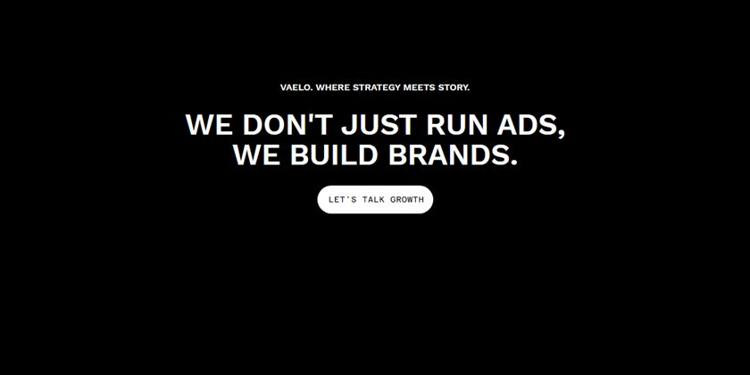
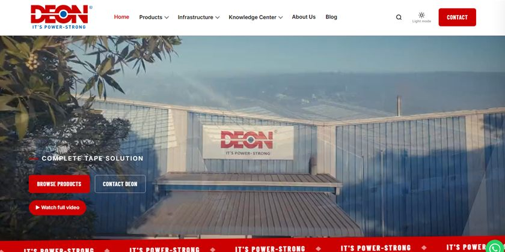
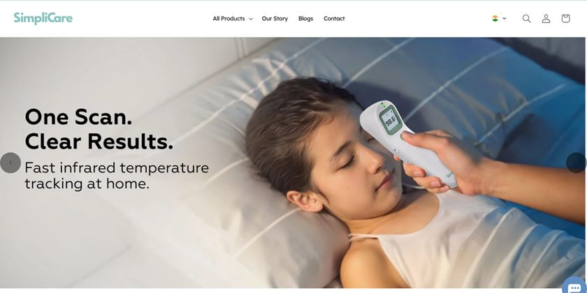
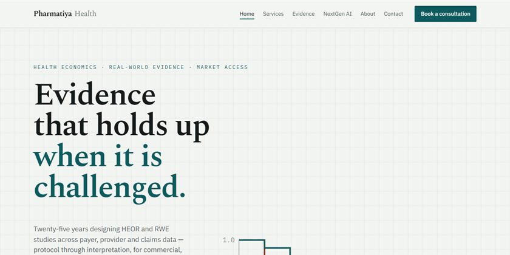
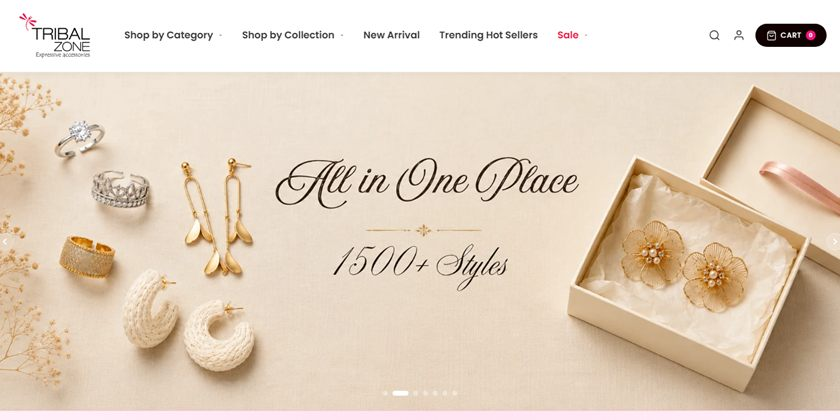
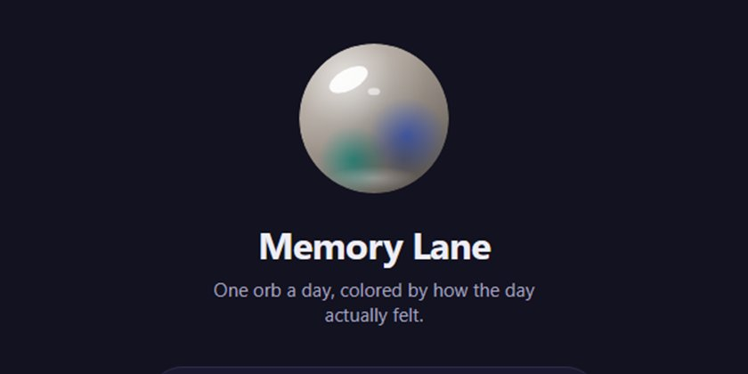

The studio's own site. Scroll-driven motion, a pinned work rail, page transitions, and a Python generator that builds the case-study pages from a data file.

A full rebuild for an industrial adhesive tape manufacturer. Twenty-six pages, a brand system carried end to end, wireframes, and Apps Script tooling behind the forms.

A Shopify storefront for a US–India health-tech brand selling medical devices and supplements. FDA-compliance copy, region-aware pricing, and a checkout that works in both markets.

A site for a health-economics consultancy. Forty-seven publications made searchable and verifiable, a study finder compiled at build time, and a team CMS that degrades gracefully when a headshot is missing.

A storefront for a fashion-jewellery brand trading since 2003. Six collections with client-side filtering, a hover-zoom gallery and a cart drawer. Forty theme versions before the live cutover.

A site for a vocational IT institute running three branches across Mumbai. Course catalogue, quiz flow, a support chatbot, and NSDC and MKCL partner integrations.
The one with no client. A journalling app where each day becomes a coloured orb — circles, streaks, and a journey view of the days that mattered. Expo front to back, Supabase behind it.
